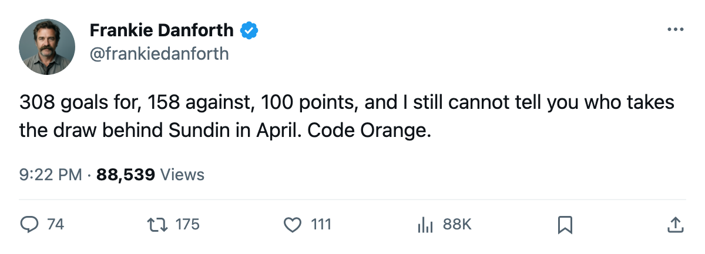

DET
DETDANFORTH: 308 goals for, 158 against, 100 points, and 21 days to find a centre
The best goal difference in the league is real. So is the shot count, and so is the hole behind Sundin.
 Frankie DanforthColumnist · Queen City Telegram
Frankie DanforthColumnist · Queen City Telegram
Code Orange
 Toronto Maple Leafs has scored 308 goals and allowed 158 in 63 games. It has 100 points and a 30-point lead in the Northeast. Friday it lost 0-2 at home to the Islanders and was outshot 33-28, and none of those first three numbers made me feel any better about the last one.
Toronto Maple Leafs has scored 308 goals and allowed 158 in 63 games. It has 100 points and a 30-point lead in the Northeast. Friday it lost 0-2 at home to the Islanders and was outshot 33-28, and none of those first three numbers made me feel any better about the last one.
I wrote on Wednesday that the 3 wins before that night came while Toronto was outshot by 5, 14 and 13. The club won the next one 1-0 in overtime. Then Friday it finally lost one the same way. Nothing about Friday was new except the result, and a club that gives up more shots than it takes will keep finding results like it.
The goalie question is answered, and that is its own problem
Ed Belfour has 23 games at 58.2 minutes a night.  Roberto Luongo95 has 42 at 61.0. Maxime Ouellet86 has 11. Belfour is 39 and makes $6.50M with 1 year left on his contract. Luongo is 25 and makes $1.60M with 2.
Roberto Luongo95 has 42 at 61.0. Maxime Ouellet86 has 11. Belfour is 39 and makes $6.50M with 1 year left on his contract. Luongo is 25 and makes $1.60M with 2.
The club spent 42 games deciding who its goaltender is, and when it decided it went to the 39-year-old. I said at the time that Belfour in net was the right call, and I will say it again. I also said the 42 games it took to get there were the part I could not forgive, and Friday did not change my mind about that either.
Twenty-one days
What the calendar has as the trade deadline is 2005-03-19, which is 21 days from today. Behind  Mats Sundin92 and his 71 points in 63 games at 19.6 minutes, the middle is
Mats Sundin92 and his 71 points in 63 games at 19.6 minutes, the middle is  Brad Richards87 at 55 points in 61 games, and Petr Chlup87 [1000815] at 38 in 52, who is 19 years old.
Brad Richards87 at 55 points in 61 games, and Petr Chlup87 [1000815] at 38 in 52, who is 19 years old.
 Jason Spezza73, 21, has 15 points in 37 games at 7.5 minutes and did not dress Friday.
Jason Spezza73, 21, has 15 points in 37 games at 7.5 minutes and did not dress Friday.
That is the whole of the depth at centre on a club with 100 points and a home playoff round already in hand. The draw in April does not care how many goals you scored in February.
 Marian Gaborik99 is the one piece that has gone right. He has 80 points, 44 of them goals, and he sits at +6 on the Bureau's Development Index.
Marian Gaborik99 is the one piece that has gone right. He has 80 points, 44 of them goals, and he sits at +6 on the Bureau's Development Index.
Sunday in Detroit, then Carolina at home on 2005-03-01.
